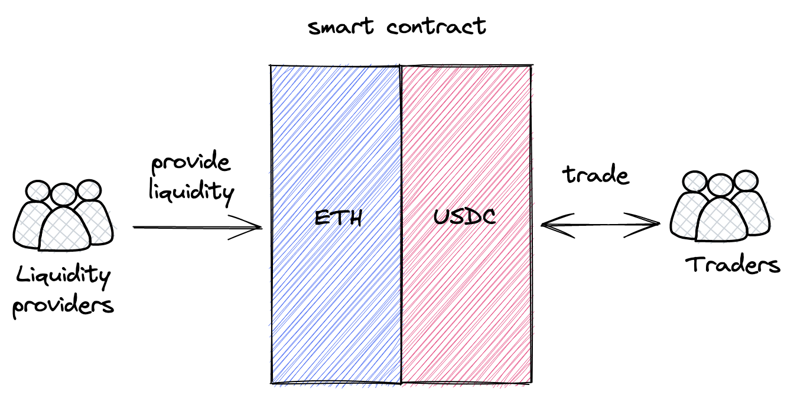

市场介绍
中心化交易所如何运作
在本书中，我们将构建一个在以太坊上运行的去中心化交易所（DEX）。交易所有多种设计模式。其中所有中心化交易所的核心都是一个订单簿。订单簿只是一个存储所有交易者想要进行的买卖订单的记录。其中的每个订单都包含订单必须执行的价格和必须买入或卖出的数量。

要进行交易，必须存在流动性，这简单来说就是市场上资产的可用性。如果你想买一个衣柜但没有人在卖，那就没有流动性。如果你想卖一个衣柜但没有人想买，那就有流动性但没有买家。如果没有流动性，就没有东西可以买卖。
在中心化交易所，订单簿是积累流动性的地方。如果有人下了卖单，他们就为市场提供了流动性。如果有人下了买单，他们期望市场有流动性，否则就无法进行交易。
当没有流动性但市场仍对交易感兴趣时，做市商就会出现。做市商是为市场提供流动性的公司或个人，也就是拥有大量资金并购买不同资产以在交易所出售的人。交易所会为这项工作支付做市商报酬。做市商通过为交易所提供流动性来赚钱。
去中心化交易所如何运作
别感到惊讶，去中心化交易所也需要流动性。它们也需要有人为各种资产的交易者提供流动性。然而，这个过程不能以中心化的方式处理。必须找到一个去中心化的解决方案，有多种去中心化的解决方案，其中一些实施方式不同。我们将重点关注Uniswap如何解决这个问题。
自动做市商
链上市场的演变带来了自动做市商（AMM）的概念。顾名思义，这种算法的工作方式与做市商完全相同，但是以自动化的方式。此外，它是去中心化和无需许可的，也就是说：
- 它不受单一实体管理；
- 所有资产不存储在一个地方；
- 任何人都可以从任何地方使用它。
什么是AMM？
AMM是一组定义如何管理流动性的智能合约。每个交易对（例如ETH/USDC）都是一个单独的合约，存储ETH和USDC，并且处理交易：交换ETH和USDC。
核心理念是pooling：每个合约都是一个存储流动性的pool，允许不同用户（包括其他智能合约）以无需许可的方式进行交易。有两种角色，流动性提供者 和 交易者，这些角色通过流动性池进行交互，他们与pool交互的方式是预先编程且不可变的。

这种方法与中心化交易所的不同之处在于，智能合约是完全自动化的，不受任何人管理。没有管理员、管理者、特权用户等。只有流动性提供者和交易者（他们可以是同一群人），所有算法都是预先编程、不可变且公开的。
现在让我们更仔细地看看Uniswap如何实现AMM。
请注意，在整本书中，我交替使用 pool 和 pair 这两个术语，因为Uniswap流动性池是两个代币的交易对。
如果您有任何问题，欢迎在此里程碑的GitHub讨论区中提出！